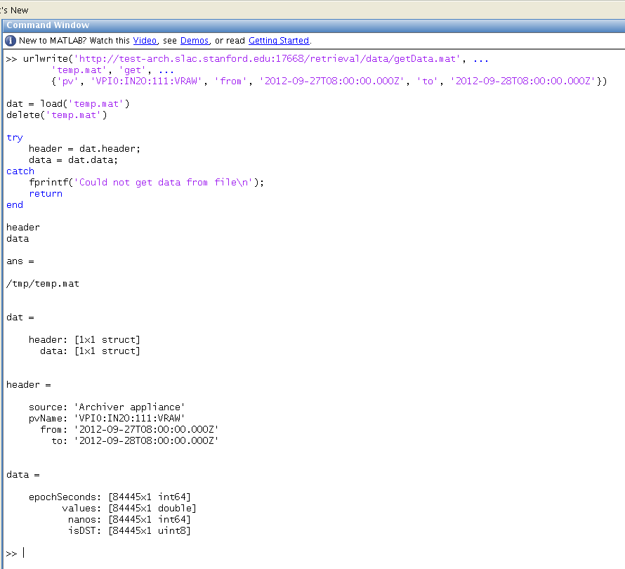

The EPICS Archiver Appliance support multiple MIME-types when retrieving data and one of the supported MIME-types is the Matlab file format.
The process of getting archive data into Matlab consists of
Constructing a URL to the server. See this section on for the URL format for data retrieval.
Using urlwrite to download data from this URL into a file.
Loading this file into Matlab.
Here's some sample code that is used to get the data for PV VPIO:IN20:111:VRAW
urlwrite('http://test-arch.slac.stanford.edu:17668/retrieval/data/getData.mat', ...
'temp.mat', 'get', ...
{'pv', 'VPIO:IN20:111:VRAW', 'from', '2012-09-27T08:00:00.000Z', 'to', '2012-09-28T08:00:00.000Z'})
dat = load('temp.mat')
delete('temp.mat')
try
header = dat.header;
data = dat.data;
catch
fprintf('Could not get data from file\n');
return
end
header
data
Here's a screenshot of this sample code being executed in a Matlab environment.

The .mat response contains two objects, a header and a data object.
The header object is indexed by the string header and is a MLStructure with fields containing some provenance information.
The data object is indexed by the string data and is a MLStructure with these fields.
epochSeconds - contains Java epoch seconds as a 1x1 uint64 array. The times are in UTC; so any conversion to local time needs to happen at the client.
values - contains the values for the samples. All scalars come as a 1x1 double array. Waveforms come as a 1xelementcount double array where elementcount is the EPICS element count of the waveform.
nanos - contains the nano second value of the EPICS record processing timestamp as a 1x1 uint64 array. Some installations embed the beam code/pulse id into this field.
isDST - contains booleans that indicate if the time indicated by epochSeconds was in daylight savings time in the timezone of the server.